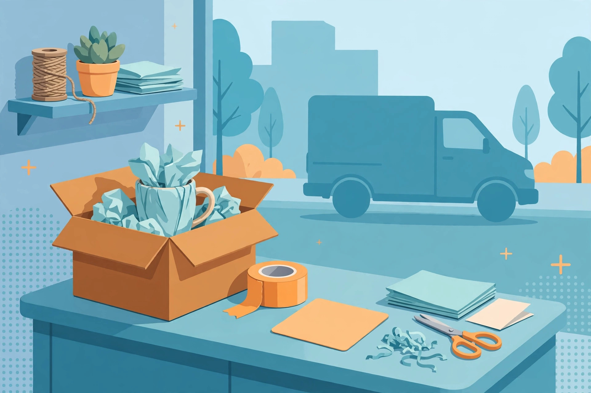

The first product description I ever wrote was, technically, perfect. It listed the mug's capacity, its glaze, its dimensions — every fact correct, every fact forgettable. It sat in my shop for weeks being politely ignored by the entire internet. Then a friend asked one devastating question: "Yes, but why would I want it?" I rewrote twelve words at the top of that listing, and the mug started selling within days. Same mug. Same photos. Different words.
That gap — between what a product is and why anyone should care — is where most listings quietly lose their sales. This guide walks through how to close it: how to lead with benefits, write for scanners, answer questions before they're asked, and add the one honest line most sellers never think of. Everything here works the same on Etsy, Amazon, or your own shop.
"350ml capacity" is a feature. "Keeps your coffee hot through a whole morning of meetings" is a benefit. The feature is what the product has; the benefit is what the buyer's life looks like because of it. Shoppers don't walk around wanting 350 millilitres of anything — they want coffee that isn't sad and lukewarm by 10 am.
The working method is a translation exercise. Take every feature on your list and ask: what does the buyer feel, save, or avoid because of this? Then write that. "Hand-stitched seams" becomes "won't split open in your gym bag". "Made from bamboo" becomes "light enough to forget it's in your backpack, and it won't smell like plastic". Do this translation for every bullet and your listing stops describing and starts selling — without a single dishonest word, which matters, because benefits you invent come back as returns and one-star reviews.
On both Etsy and Amazon, your title and the first line of your description do double duty: they carry most of your search ranking, and they form the entire first impression. Many shoppers will never read past them. So the main keyword and the main benefit both belong there — not in paragraph three, where they're currently hiding in most listings I review.
Compare two openings for the same product. "Handmade ceramic mug" is a label; it tells a search engine something and a human almost nothing. "Handmade ceramic mug that keeps coffee hot for 2 hours — and actually fits your car's cup holder" is a reason to click, a reason to keep reading, and it still contains the keyword. Nothing about the product changed. The first line just started doing its job.
A useful habit: read your first line out loud and ask, "would I keep reading?" If it sounds like a warehouse label, rewrite it until it sounds like a recommendation from a person. Search engines have quietly become very good at telling the difference, too — listings written for humans first tend to hold their rankings, while keyword-stuffed ones slide a little more with every algorithm update.
Almost nobody reads a listing from top to bottom. They skim the bullets, glance at the photos, check the price. That's about it. Your description should be built for that behaviour, not against it: short paragraphs up top for the story, then clean bullets for the facts a scanner is hunting for.
The rules I use after testing plenty of listings: one benefit per bullet, never two ideas sharing a line. Short sentences — if a bullet needs a comma, an "and", and another comma, it's two bullets wearing a trench coat. Put the strongest benefit first, because scanners bail out early; the third bullet gets maybe half the readers of the first. And keep bullets parallel in shape: if one starts with a verb, they all start with verbs. It sounds fussy, but parallel bullets are measurably easier to skim, and skimming is the whole game.
Five bullets, five decisions answered. Notice the last one isn't about the mug at all — it's about the moment it arrives, which is exactly what a gift-buyer is scanning for.
Every unanswered question on a listing is a small reason to leave the page — and, if the buyer pushes through anyway, a message you'll have to answer later by hand. Size, material, care instructions, shipping time, what's actually in the box: put the answers in the listing once, and they work for you forever, at 3 am, while you're asleep, while you're making the next batch.
The cheapest research method I know: read your own past messages and reviews. Every question a customer has ever asked you is a line your listing is missing. I keep a running note of them; the first month I did this, my "how big is it exactly?" messages dropped to nearly zero, because the answer was finally in the listing, in centimetres and inches, next to a photo of the mug beside a standard can for scale.

One more, often missed: say what happens after the click. How it's packed, when it ships, what the buyer should do if it arrives damaged. Certainty is a feature. A nervous buyer with a clear answer buys; a nervous buyer with a question mark goes back to the search results.
Here's the line that feels wrong until you try it: say who should not buy your product. "Not microwave safe." "Best for desks, not for travel." "Unscented — if you want a strong fragrance, this isn't the one." Sellers resist this because it feels like talking someone out of a sale. It is — one specific someone: the wrong buyer.
The wrong buyer is the most expensive person in your shop. They return the item (sometimes at your cost), leave the two-star review that mentions a flaw you could have stated upfront, and consume the support time your right buyers needed. One honest line filters them out before the purchase, prevents the return, and — here's the subtle part — makes every other claim in your listing more believable. A seller who tells you a downside is a seller whose upsides you trust.
After I started adding a "not for" line to my listings, my return rate dropped and my reviews got warmer, because the people who bought were the people the product was actually for. Honesty in one line buys trust for every other line. It's the cheapest marketing there is.
Similar structure is fine; copied text is not. This isn't just ethics — it's survival. Marketplaces actively detect duplicated content, copied listings get suppressed or removed, and buyers who've seen the original will never trust the copy. The competitor's words also describe the competitor's product: their materials, their sizes, their promises. Copy them and you inherit claims you can't keep, which is how a wording shortcut becomes a refund habit.
Study competitors like a researcher instead. Note which benefits they lead with, which questions they answer, where their reviews complain — complaints about a rival are a gift; each one is a line you can honestly add ("ours is the one that fits the cup holder" exists because a competitor's reviews were full of spills). Then write from your own product, in your own words, with your own mug in front of you. Your listing stays yours, your facts stay true, and your voice becomes the thing copycats can't take.
If you sell products yourself, this skill is pure margin: better copy raises your conversion rate without lowering prices or buying ads. A listing that converts at 3% instead of 2% is a 50% raise on the same traffic, the same product, the same photos. Few changes in a shop pay back that fast, which is why description audits are the first thing experienced sellers do in a quiet month.
And it's a service in its own right. Sellers pay for description writing all the time, because every new product through the door needs one, and most sellers would rather make things than write about them. A simple offer — one listing rewritten as a sample, then a per-listing or monthly bundle price — is an easy first freelance service to sell, and it pairs naturally with the pricing maths in our freelance pricing guide. To draft your own listings faster, use the free Etsy / Amazon Description Generator — it produces the full structure for one listing at a time, and you add the voice.
Nobody has ever woken up wanting 350 millilitres of double-walled anything. They want coffee that's still hot when the meeting ends, a gift that makes them look thoughtful, a small daily ritual that feels like theirs. Write that — benefits first, first line doing the heavy lifting, bullets a scanner can trust, every question answered, and one honest line about who it's not for. Do it in your own words and your listing stops being a label and starts being a salesperson who never sleeps. The mug never changed. The words did. They usually do.
Long enough to answer every buying question, and not a word longer. For most physical products that's a short opening paragraph with the main benefit, five or six scannable bullets, and a compact details section covering size, materials, care and shipping. Very short descriptions leave questions unanswered and lose nervous buyers; very long ones bury the benefits. If a sentence doesn't help someone decide, it isn't pulling its weight — cut it and let the important lines breathe.
A feature is what the product has; a benefit is what that means for the buyer's day. "Double-walled steel" is a feature. "Your coffee stays hot through the school run and the first meeting" is the benefit of that feature. Buyers purchase benefits and justify the purchase with features, so lead with the benefit, then let the feature stand underneath it as proof. The translation question is always the same: what does the buyer feel, save, or avoid because of this?
Yes — as a drafting partner, not as the author of record. AI is good at producing the structure: a benefit-led opening, clean bullets, a details section. What it can't supply is your product's truth: the exact sizes, the honest downside, the detail from a real customer's review. Generate a draft, then edit it against the physical item in front of you, correcting facts and adding your voice. Listings that skip the editing step sound like everyone else's — because they are.
Yes, one honest line is enough. It feels counterintuitive, but the wrong buyer costs you far more than a lost sale: returns, refunds, support time and the lukewarm review that follows. A clear "not for" line — about size, use case, scent, compatibility, anything real — filters those buyers out kindly and early. As a bonus, it makes the rest of your listing more credible; shoppers trust sellers who admit a limitation far more than sellers who claim perfection.
Views without sales usually means the click was earned but the decision wasn't. Work through the likely culprits in order: the first line states a label instead of a benefit; the bullets hide the strongest point in position four; a basic question (size, shipping, what's included) is unanswered; or the price is being judged against listings whose benefits are clearer. Fix the description before touching the price — in my experience, unclear copy is the cause far more often than cost.